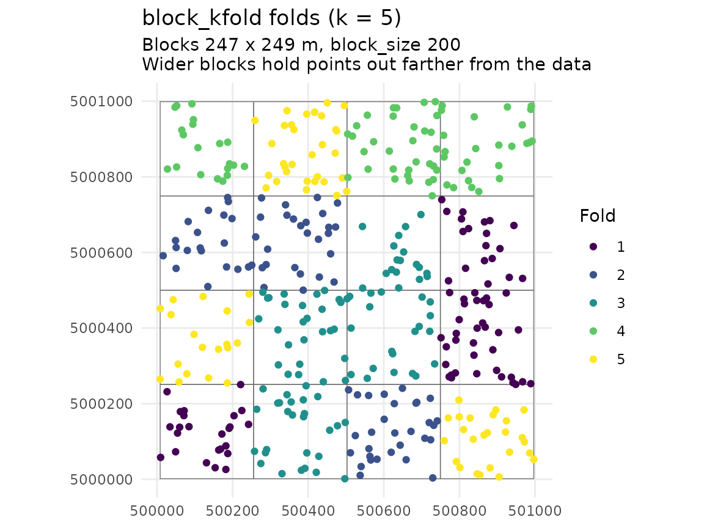
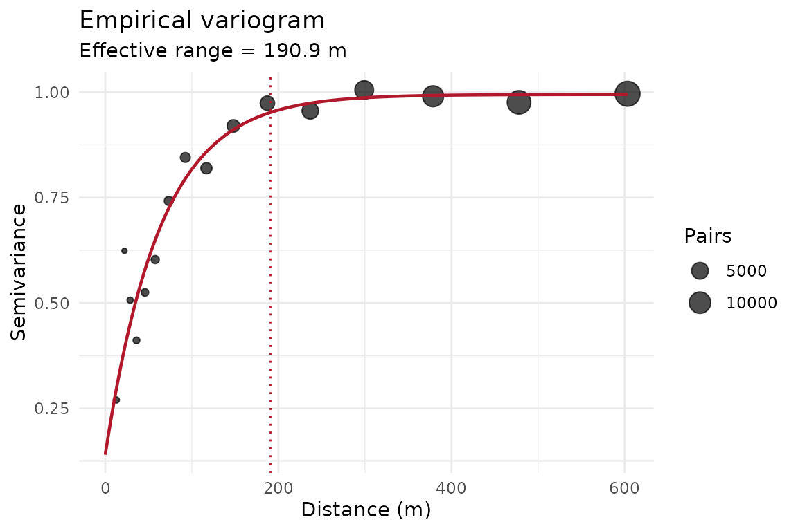
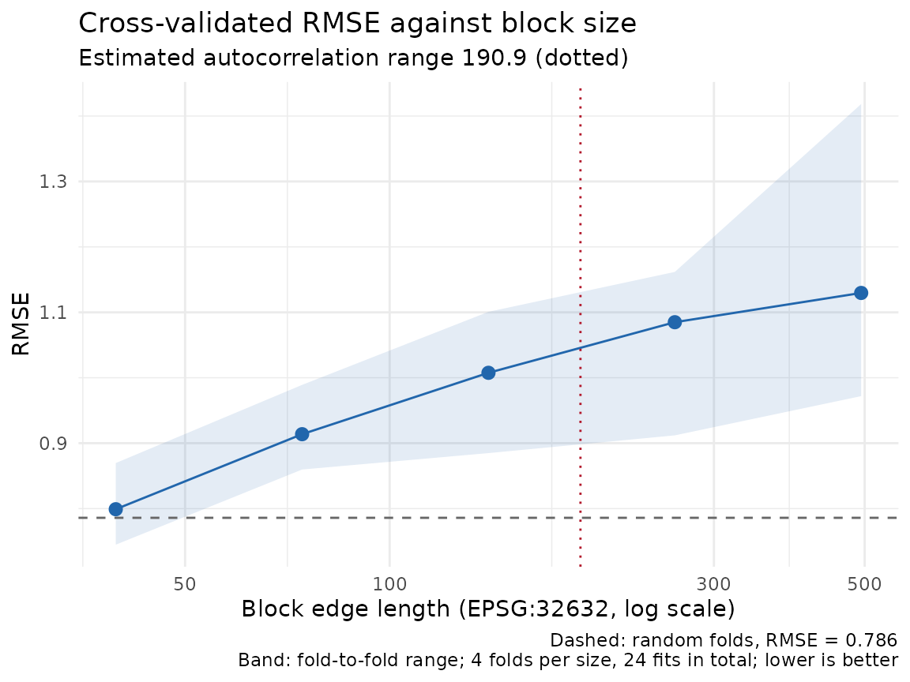
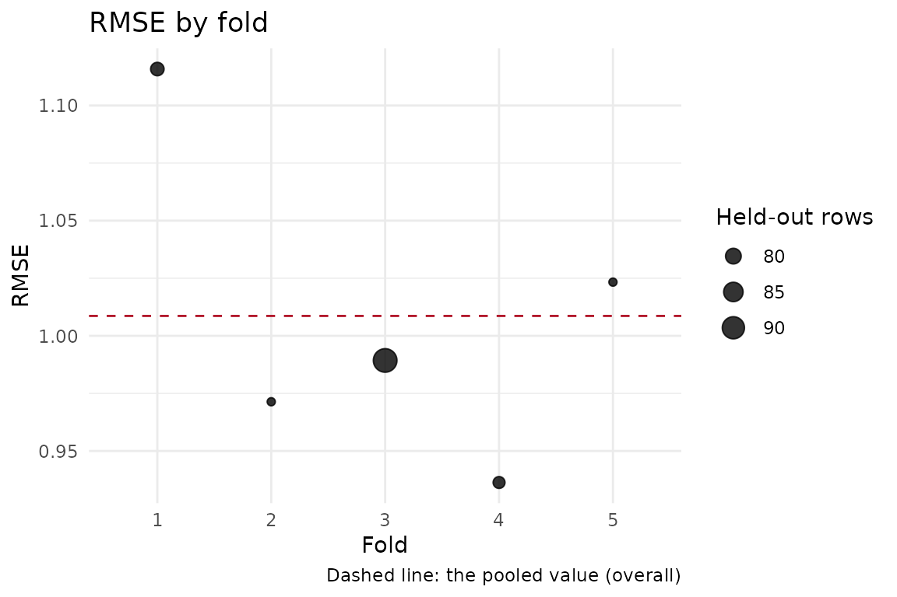

Spatial cross-validation
Justin Chase
Source:vignettes/spatial-cross-validation.Rmd
spatial-cross-validation.RmdThis article shows what a cross-validated error measures, how to choose folds whose score matches the map you will make, how to size the blocks, and how to read every part of the result.
This article needs two optional packages: gstat for
the autocorrelation range and ggplot2 for the figures.
Where one is missing, the code that needs it is shown but not
run.
What a cross-validated error measures
A random fold puts a held-out point’s neighbours in the training set. When the field is spatially autocorrelated, those neighbours carry the held-out point’s value, and a model that draws on nearby observations uses them. The cross-validation score then measures the error of predicting among the samples. Blocks hold out whole areas, and their score measures the error of predicting into an unsampled gap the size of a block (Roberts et al. 2017).
A cross-validated error is the error at the distance the folds put between the held-out points and their training data. It reads low for a map whose locations sit farther from the data than that, and high for one whose locations sit closer.
A learner and a simulated field
Each function that scores a model takes the folds from
make_folds() through its folds argument:
cv_rf(), cv_gwr() and cv_bayes()
for the built-in backends, compare_models_cv() to score
several on the same folds, and cv_spatial() for a learner
of your own. This article uses a five-nearest-neighbour smoother written
for cv_spatial(). It needs no optional package and predicts
from the five nearest observations alone, so how far the folds hold
those observations away decides its score.
library(sf)
library(spatialkit)
knn_fit <- function(train_sf, response_var = "z", k = 5L) {
new_spatial_fit(
subclass = "knnsurf_fit",
engine = list(xy = st_coordinates(train_sf),
y = st_drop_geometry(train_sf)[[response_var]],
k = k),
formula = as.formula(paste(response_var, "~ 1")),
response_var = response_var,
predictor_vars = character(0),
data_sf = train_sf
)
}
predict.knnsurf_fit <- function(object, newdata = NULL, ...) {
e <- object$engine
xy <- if (is.null(newdata)) e$xy else st_coordinates(newdata)
vapply(seq_len(nrow(xy)), function(i) {
d <- sqrt((e$xy[, 1] - xy[i, 1])^2 + (e$xy[, 2] - xy[i, 2])^2)
mean(e$y[order(d)[seq_len(min(e$k, length(d)))]])
}, numeric(1))
}
registerS3method("predict", "knnsurf_fit", predict.knnsurf_fit)
knn_fn <- function(train_sf, ...) knn_fit(train_sf, "z", k = 5L)cv_spatial() needs only the constructor and a
predict() method. ?new_spatial_fit lists what
summary() and model_metrics() need on top of
that, and vignette("models") explains the pattern.
The data are 400 points in a 1,000 m square (EPSG:32632) over a
simulated exponential field with range parameter 60 m, so its
correlation falls to 5 percent at about 180 m, three times the range
parameter. The sd = 0.3 term adds measurement noise.
Random folds against blocks
The next chunk scores the same learner on the same data with random folds and with blocks, and prints the size of the blocks built.
fr <- make_folds(pts, k = 5, method = "random_kfold", seed = 1)
fb <- make_folds(pts, k = 5, method = "block_kfold", block_size = 200, seed = 1)
c(width = fb$params$block_width, height = fb$params$block_height)## width height
## 247.0732 249.3515
cv_random <- cv_spatial(pts, "z", character(0), fit_fn = knn_fn, folds = fr)
cv_blocked <- cv_spatial(pts, "z", character(0), fit_fn = knn_fn, folds = fb)
c(random = cv_random$overall$RMSE,
blocked = cv_blocked$overall$RMSE,
ratio = cv_blocked$overall$RMSE / cv_random$overall$RMSE)## random blocked ratio
## 0.7839092 1.0086341 1.2866722block_size is the smallest edge a block may have.
make_folds() fits a whole number of blocks across each
axis, so over this square block_size = 200 builds a 4 by 4
grid of blocks 247 m wide and 249 m tall, wider than the 180 m range.
“Choosing a block size” below sizes the blocks from the data. Without
folds, cv_spatial() builds block folds itself;
build them with make_folds() when you want to inspect or
reuse them.
Blocked folds put the error 29 percent higher on this fixture. Both numbers come from the same 400 observations and the same smoother; only the fold assignment differs.
Two choices made outside the folds change what either score measures.
A model given the coordinates as predictors
(fit_rf_model(include_coords = TRUE)) can learn the
training surface by location, so its error grows quickly with the
distance from the data. Predictors chosen on the whole data set have
seen every held-out row, and select_features_forward()
chooses them inside the folds instead. vignette("models")
covers both.
Which score matches your map
The number that applies depends on where the map predicts.
fold_separation() takes the locations the map will predict
at and compares two sets of distances: from each of those locations to
the nearest training point, and from each held-out point to the nearest
point of its fold’s training data. Here the map is a 30 by 30 grid of
points over the square, and reading() returns the one-word
reading of a set of folds against it.
map_pts <- st_make_grid(pts, n = c(30, 30), what = "centers")
reading <- function(folds, data = pts) {
sep <- fold_separation(folds, data, prediction_points = map_pts)
attr(sep, "target")$reading
}
c(random = reading(fr), blocked = reading(fb))## random blocked
## "matched" "farther"The reading is one of four:
-
"matched": the held-out points sit about as far from their training data as the map’s points do, so the score estimates the error at the map’s distances. -
"farther": they sit farther, and the score tends to read high for this map. -
"closer": they sit closer, and the score tends to read low for this map. Random folds on clustered samples, with a map of the whole region, read this way. -
"mixed": closer at some distances and farther at others, so the distances give no single direction.
The reading compares nearest-neighbour distances only. On clustered samples, a learner that averages several neighbours can still score low when those distances match.
print() gives the distances fold by fold:
sep_blocked <- fold_separation(fb, pts, prediction_points = map_pts)
sep_blocked## Fold separation: block_kfold, 5 fold(s), 400 held-out point(s) (EPSG:32632)
## prediction target: 900 point(s), measured to each fold's training data
##
## fold n_train n_test n_blocks min_dist median_dist target gap
## 1 322 78 3 27.33 90.32 27.35 61.75
## 2 324 76 3 12.77 76.32 27.44 43.02
## 3 307 93 4 12.77 83.85 28.87 46.78
## 4 323 77 3 14.66 127.40 27.33 91.32
## 5 324 76 3 14.66 86.82 27.52 51.98
##
## Held-out points sit a median of 89.72 from their nearest training
## point; the closest is 12.77 away.
## The prediction points sit a median of 27.56 from the same training data
## (23.19 from the nearest of all sites). Held-out minus prediction:
## +58.55 in mean distance (W1 58.55). The held-out points sit farther
## from their training data than the prediction points do, so the
## cross-validated error tends to read high for these prediction points.min_dist and median_dist run from each
held-out point to its nearest training point, target is the
median distance from the map’s points to the same training data, and
gap is the fold’s mean held-out distance minus its mean
prediction distance. The lines under the table pool the folds: the
held-out points sit a median of 89.7 m from their training data, and the
map’s points 27.6 m.
Clustered samples
The points of this fixture cover the square evenly, so random folds
read "matched" for a map of it. The next chunk keeps only
the points within 120 m of six of them, a clustered sample, and reads
random folds and kNNDM folds against the same map of the whole
square.
set.seed(2)
centres <- pts[sample(nrow(pts), 6), ]
cl <- pts[lengths(st_is_within_distance(pts, centres, dist = 120)) > 0, ]
nrow(cl)## [1] 102
fr_cl <- make_folds(cl, k = 5, method = "random_kfold", seed = 1)
fk_cl <- make_folds(cl, k = 5, method = "knndm", prediction_points = map_pts,
seed = 1)
c(random = reading(fr_cl, cl), knndm = reading(fk_cl, cl))## random knndm
## "closer" "matched"
cv_random_cl <- cv_spatial(cl, "z", character(0), fit_fn = knn_fn,
folds = fr_cl)
cv_knndm_cl <- cv_spatial(cl, "z", character(0), fit_fn = knn_fn,
folds = fk_cl)
c(random = cv_random_cl$overall$RMSE, knndm = cv_knndm_cl$overall$RMSE)## random knndm
## 0.7815208 1.2562404Random folds read "closer": each held-out point keeps
training points from its own cluster, a median of 27.8 m away, while the
map’s points sit a median of 107 m from the same training data.
method = "knndm" (Linnenbrink et al. 2024) builds
k folds whose held-out distances come as close as it can to
the distances from map_pts to the samples, here by grouping
the samples into 8 clusters, and reads "matched". Its RMSE
of 1.26, against 0.78 for random folds, is the score at the distances
the map has to reach. For this five-neighbour learner it can still read
low for this map, as the caveat on clustered samples above says.
The six fold schemes
make_folds(method = ) builds six fold schemes:
method |
held out in each fold | also left out of training | needs | suits a map that |
|---|---|---|---|---|
random_kfold |
a random 1/k of the rows | nothing | k |
predicts among the samples, over an area they cover evenly |
block_kfold |
the points in whole blocks of a grid, or of blocks
|
nothing |
k; optionally block_size,
auto_range, block_nx/block_ny or
blocks (otherwise about block_multiplier * k
blocks) |
predicts into unsampled gaps about as wide as the blocks |
buffered_loo |
one point | every point within buffer of it |
buffer; max_test limits the number of
fits |
predicts at a known distance from the data |
leave_location_out |
every row of one or more locations | nothing | group_var |
predicts at sites with no measurements, from repeated measurements at others |
nndm |
one point | neighbours, chosen to match the prediction distances (Milà et al. 2022) |
prediction_points; at most 5,000 rows |
predicts at known locations, with a model cheap enough to refit once per point |
knndm |
one of k folds, from clusters of the points or a random
partition, whichever comes closer to the prediction distances |
nothing | prediction_points |
predicts at known locations, from a larger layer or with a costly model |
plot_folds() draws the assignment, with the blocks
behind it when the scheme has any:
plot_folds(fb, pts)
Check whether any fold is a thin sliver or a single corner. If one
is, change the block design: a different block_size, or
polygons of your own through make_folds(blocks = ).
The next chunk runs three more schemes on the same data: kNNDM
matched to the map’s points; buffered leave-one-out with a buffer of 180
m, the field’s effective range, scored on 50 of the points through
max_test; and blocks taken from Voronoi cells around 16
k-means seeds in place of the grid. leave_location_out
needs repeated measurements at the same sites, which this fixture does
not have.
fk <- make_folds(pts, k = 5, method = "knndm", prediction_points = map_pts,
seed = 1)
floo <- make_folds(pts, method = "buffered_loo", buffer = 180, max_test = 50,
seed = 1)
vor <- build_tessellation(voronoi_seeds_kmeans(pts, 16), quiet = TRUE)
fv <- make_folds(pts, k = 5, method = "block_kfold", blocks = vor$cells,
seed = 1)
schemes <- list(knndm = fk, buffered_loo = floo, voronoi_blocks = fv)
data.frame(
folds = sapply(schemes, function(f) f$k),
reading = sapply(schemes, reading),
RMSE = sapply(schemes, function(f)
cv_spatial(pts, "z", character(0), fit_fn = knn_fn, folds = f)$overall$RMSE)
)## folds reading RMSE
## knndm 5 matched 0.7839092
## buffered_loo 50 farther 1.1377276
## voronoi_blocks 5 farther 0.9957734kNNDM keeps the random partition here (fk$params$chosen
is "random"), as it does for samples spread evenly over the
map. The 180 m buffer and the Voronoi blocks, about 254 m across, both
hold the held-out points farther from their training data than the map’s
points sit. make_folds(blocks = ) takes any polygons of
your own the same way, such as the cells of another tessellation or a
set of watersheds.
Choosing a block size
Make the blocks as wide as the gaps the map has to bridge. The wider the blocks, the farther the held-out points sit from their training data, and the score is the error at that distance.
From the autocorrelation range
The autocorrelation range is the distance beyond which two observations are close to uncorrelated. Using it as the smallest block edge is one way to choose the separation, and suits a map that has to reach that far from the data (Roberts et al. 2017; Valavi et al. 2019).
sac <- estimate_sac_range(pts, "z")
c(range = as.numeric(sac),
nugget = sac_nugget(sac),
sill = sum(attr(sac, "variogram_model")$psill))## range nugget sill
## 190.8824784 0.1404058 0.9942011The estimated range, 190.9 m, is close to the 180 m the field was
simulated with. sac_nugget() reads the nugget off the same
fitted model; here it is 14 percent of the sill. A nugget that is most
of the sill means nearby observations carry little information, and the
blocked and random scores tend to be close.
plot() draws the variogram behind the estimate:
plot(sac)
The points are the empirical semivariances, sized by the number of point pairs behind each, the curve is the fitted model, and the dotted line marks the effective range given in the subtitle. When no range is identified, the subtitle gives the reason and no line is drawn.
make_folds(auto_range = TRUE) runs this estimate and
uses it as the smallest block edge:
fa <- make_folds(pts, k = 5, method = "block_kfold", response_var = "z",
auto_range = TRUE, seed = 1)
c(range = as.numeric(fa$params$sac_range),
width = fa$params$block_width,
height = fa$params$block_height)## range width height
## 190.8825 197.6586 199.4812The blocks are a little wider than the range because a whole number of them has to fit across the square.
When the variogram identifies no range,
estimate_sac_range() returns NA with the
reason attached. auto_range then warns and falls back to
the default grid, about block_multiplier * k blocks over
the extent (15 at k = 5), and you are back to choosing a
size yourself. ?estimate_sac_range lists each reason and
what it means, and plot() draws the variogram wherever one
was computed.
The error at each block size
cv_block_size_sweep() runs the cross-validation at
several block sizes and reports the curve, with a random-fold run as the
reference. Each size is a full cross-validation, so five sizes at
k = 5 make 25 fits, plus 5 for the random reference;
max_fits caps that.
sw <- cv_block_size_sweep(pts, "z", character(0), fit_fn = knn_fn,
k = 5, n_sizes = 5, seed = 1, quiet = TRUE)
sw## Cross-validation RMSE against block size (30 fits, k = 5, sizes in EPSG:32632)
## estimated autocorrelation range: 190.9
## block_size blocks_used k folds_ok value fold_min fold_max
## random NA 5 5 0.7839 0.7534 0.8376
## 39.53 291 5 5 0.8139 0.6790 0.9040
## 67.32 169 5 5 0.8971 0.8740 0.9074
## 114.60 64 5 5 0.9734 0.7316 1.1559
## 195.20 25 5 5 1.0564 0.8429 1.2352
## 332.50 6 5 5 1.0968 1.0011 1.1759
plot(sw)
The error climbs away from the random-fold reference as the blocks
widen, and the dotted line marks the estimated range. Each point of the
curve is the error of a map whose locations sit as far from the data as
that size’s held-out points do. To choose a size, run
fold_separation() on the folds of each size, the
$folds of each element of attr(sw, "results"),
against the map’s points. block_size is the smallest edge
asked for and block_width the edge built:
sizes <- data.frame(sw)[, c("block_size", "block_width", "value")]
sizes$reading <- sapply(attr(sw, "results"), function(r) reading(r$folds))
sizes## block_size block_width value reading
## 1 NA NA 0.7839092 matched
## 2 39.53171 39.53171 0.8138507 matched
## 3 67.32043 70.59234 0.8970955 farther
## 4 114.64316 123.53660 0.9733795 farther
## 5 195.23129 197.65855 1.0564147 farther
## 6 332.46864 494.14639 1.0968178 fartherFor a map of this square the random folds read
"matched", and so do the blocks asked for at 39.5 m. Their
scores, 0.78 and 0.81, are the errors at the map’s distances; the larger
sizes read "farther".
Watch blocks_used as the blocks grow. At the largest
size, 332.5 m asked for and 494.1 m built, 6 blocks hold the points for
5 folds, so each fold holds out a large piece of the square. That score
is the error of a map that has to reach across such a piece.
Reading a cross-validation result
overall is the pooled score and
fold_metrics has one row per fold.
Spread across folds
plot_cv_metrics() shows the spread across folds. The
pooled RMSE cannot tell one bad fold from an even spread of error; here
the five blocked folds run from 0.94 to 1.12.
plot_cv_metrics(cv_blocked, metric = "RMSE")
Folds and rows accounted for
Two counts and four fields say what happened on the way through:
n_folds_attempted against n_folds_succeeded;
fold_status, one row per fold; n_dropped, rows
removed for a missing or non-finite value; orphan_rows,
rows no fold names; and n_unknown_ids, row IDs the folds
name that the data do not have. On the clean run above nothing went
missing:
c(attempted = cv_blocked$n_folds_attempted,
succeeded = cv_blocked$n_folds_succeeded,
dropped = cv_blocked$n_dropped,
orphans = length(cv_blocked$orphan_rows),
unknown = cv_blocked$n_unknown_ids)## attempted succeeded dropped orphans unknown
## 5 5 0 0 0The next three runs each lose something: a learner that fails on one fold, data with three missing values scored on folds built on the first 300 rows, and the first 300 rows scored on folds built on all 400.
Folds that failed
The next chunk scores a learner that fails on one fold.
flaky <- function(train_sf, ...) {
if (nrow(train_sf) < 320) stop("not enough training rows for this learner")
knn_fit(train_sf, "z", k = 5L)
}
cv_flaky <- cv_spatial(pts, "z", character(0), fit_fn = flaky, folds = fb)## Warning: cv_spatial(): 1 of 5 fold(s) failed (fold 3: error), so `overall`
## pools the other folds only and covers 307 of the 400 rows. A fold that fails is
## often the hardest to predict (a region or a factor level no training fold
## covers), so `overall` may flatter the model; `fold_status` gives each fold's
## cause.
cv_flaky$fold_status## fold status message
## 1 1 ok
## 2 2 ok
## 3 3 error not enough training rows for this learner
## 4 4 ok
## 5 5 ok
c(attempted = cv_flaky$n_folds_attempted,
succeeded = cv_flaky$n_folds_succeeded)## attempted succeeded
## 5 4fold_status names every fold supplied and what became of
it, with the error text for the ones that failed. status is
one of ok, error, skipped,
dropped or worker_error. overall
then pools the 4 folds that ran, 307 of the 400 rows, and
cv_spatial() warns about it, since a fold that fails is
often the hardest one to predict. fold_status keeps each
cause with the result, so a script or a knitted report still has it
after the console output is gone.
Rows left out
holed <- pts
holed$z[c(3, 17, 42)] <- NA # three rows will be dropped
part <- make_folds(pts[1:300, ], k = 4, method = "block_kfold", seed = 1)
cv_acc <- cv_spatial(holed, "z", character(0), fit_fn = knn_fn, folds = part)## Warning: prep_model_data(): dropped 3 of 400 row(s) (0.8%): 3 with a missing
## value, 0 with a non-finite value and 0 without a location (an empty point, or a
## coordinate that is not finite or lies beyond 1e150). Rows affected by column: z
## 3. The fit uses the 397 row(s) that remain; attr(, "dropped") lists the rows
## removed.## Warning: cross-validation: 100 of 397 rows in the data are named by no fold
## (e.g. row ID 301, 302, 303). They enter no training set and are never scored.
## If the folds were built on a different or subsetted layer, rebuild them with
## make_folds() on this one.
c(n_dropped = cv_acc$n_dropped,
n_orphans = length(cv_acc$orphan_rows),
n_unknown_ids = cv_acc$n_unknown_ids)## n_dropped n_orphans n_unknown_ids
## 3 100 3n_dropped is how many rows
prep_model_data() removed for a missing or non-finite value
before any fold was fitted. orphan_rows holds the row IDs
no fold names, which here is rows 301 to 400, because the folds were
built on the first 300. n_unknown_ids counts the distinct
row IDs the folds name that the data do not have, which here is the
three rows the NAs removed.
The two mirror each other, and which one is non-zero tells you which way the mismatch runs:
cv_rev <- cv_spatial(pts[1:300, ], "z", character(0), fit_fn = knn_fn,
folds = fb)
c(n_orphans = length(cv_rev$orphan_rows), n_unknown_ids = cv_rev$n_unknown_ids)## n_orphans n_unknown_ids
## 0 100Folds built on more rows than the data has give
n_unknown_ids; folds built on fewer give
orphan_rows. Rows in orphan_rows are never
scored, so the score covers every observation only when
orphan_rows is empty, no row was dropped and every fold
ran. Unknown IDs cost the folds rows but leave every observation scored:
the run above predicts 300 of its 300 rows.
Interval calibration (Bayesian GP)
A Bayesian GP predicts an interval for each held-out value, and a
calibration check compares the share of values each interval contains
with the share it claims. plot_calibration() draws, for
each nominal level, the share of held-out values the intervals
contained, pooled and fold by fold, from a cv_bayes()
result. The chunk below is not run here, because it needs
brms and a Stan toolchain and takes minutes. Nine coverage
levels give a curve in place of the default three.
cvb <- cv_bayes(pts, "z", character(0), folds = fb,
coverage_levels = seq(0.1, 0.9, by = 0.1),
fit_args = list(chains = 2, iter = 1000))
plot_calibration(cvb)Points below the diagonal are intervals that are too narrow: an 80 percent interval that contains 60 percent of the held-out values claims more certainty than the model has.
Next
The next article in reading order is vignette("models"),
which fits the backends, compares them on the same folds, checks the
residuals and maps where the predictions apply.
vignette("reporting") lists what to report from a
cross-validation. This article relied on ?make_folds,
?fold_separation, ?plot_folds,
?estimate_sac_range, ?sac_nugget,
?cv_block_size_sweep, ?cv_spatial,
?new_spatial_fit, ?plot_cv_metrics and
?plot_calibration. vignette("glossary")
defines the terms it uses.
References
Linnenbrink, J., Milà, C., Ludwig, M. and Meyer, H. (2024). kNNDM CV: k-fold nearest-neighbour distance matching cross-validation for map accuracy estimation. Geoscientific Model Development 17, 5897–5912. https://doi.org/10.5194/gmd-17-5897-2024
Milà, C., Mateu, J., Pebesma, E. and Meyer, H. (2022). Nearest neighbour distance matching leave-one-out cross-validation for map validation. Methods in Ecology and Evolution 13(6), 1304–1316. https://doi.org/10.1111/2041-210X.13851
Roberts, D. R., Bahn, V., Ciuti, S., et al. (2017). Cross-validation strategies for data with temporal, spatial, hierarchical, or phylogenetic structure. Ecography 40, 913–929. https://doi.org/10.1111/ecog.02881
Valavi, R., Elith, J., Lahoz-Monfort, J. J. and Guillera-Arroita, G. (2019). blockCV: An R package for generating spatially or environmentally separated folds for k-fold cross-validation of species distribution models. Methods in Ecology and Evolution 10, 225–232. https://doi.org/10.1111/2041-210X.13107